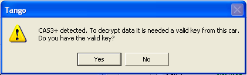
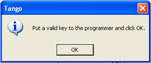

|
CAS3 |
Top Previous Next |
|
BMW CAS3
After key maker creates a key you will be asked to save a new file. Write this file into the immobilizer.
See access to CAS in the 5-model E60
CAS3+
There are the new type of devices in the CAS3 family, named CAS3+. The major difference between CAS3 and CAS3+ is that some important data in the CAS3+ is encrypted. To make a key for the CAS3+ you need to have at least one valid key. If you have no keys it is impossible to decrypt data.
The situation with CAS3+ detected automatically by Tango during a file loading to a key maker. If a dump is of CAS3+ kind, the following message appears: 
Click "YES" button. The new message appears: 
Place existing valid key into antenna area of the programmer and click "OK". Tango will read the existing key and decrypts data in the dump. After reading remove the original key. Further operations are same as usual CAS3.
Note. If you have no keys or Tango cannot read the existing key, you will be redirected to the CAS3 mode. The key made in this mode never will act. This mode intended for the advanced customers for manual operations.
|